6.1 Where Do the Poor Live?
Although poor people live in almost every society they are often concentrated geographically in certain areas. The severity of poverty varies across countries and the geographic patterns of concentration are not static. Moreover while the poor share certain common characteristics, the profile of the poor often differs among societies. Knowledge of where the poor live, how severe their poverty is, and other characteristics can be critical for designing effective policies to meet their needs and improve their welfare.
In this chapter we have provided a general review of where the world’s poor and particularly the poorest live, the extent of progress made in poverty reduction, and the characteristics of the poor based on a quantitative assessment across selected developing countries.1 Our research shows that despite much progress reducing poverty worldwide, a substantial number of the world’s poorest people are being left behind. Millions of people across the developing world are still solely preoccupied with survival and hunger is a reality in their everyday lives. Today around 1.3 billion people in the developing world subsist on less than US$1.25/day and 234 million live on less than US$0.63/day. Our findings also indicate that compared to the poor with incomes closer to the poverty line of US$1.25/day, the poorest typically belong to socially excluded groups, lived in remote rural areas, and had less education, fewer assets, and less access to markets.
In September 2000 the Millennium Declaration was adopted by 189 member states of the United Nations. The heads of states confirmed their countries’ commitments to achieving the eight Millennium Development Goals (MDGs) by 2015. The first MDG is to reduce the proportion of people that lived in poverty and hunger in 1990 by half by 2015. The MDG indicator of extreme poverty is living on less than US$1.25/day,2 which we used in this chapter to identify the regions where the world’s poor live and trends in poverty from 1990 (the base year for the MDGs) until 2008. We disaggregated this measure of poverty to look at the locations and changes in the welfare of those living below US$0.63/day and by doing this we captured trends in the severity of extreme poverty.
In 1990 the developing world had a population of 4.43 billion, of which 1.91 billion (43.1 %) lived on less than US$1.25/day. From 1990 to 2008 the number of people in developing countries grew by 1.32 billion and the number of people living on less than US$1.25/day declined. Of the developing world’s 5.75 billion people in 2008, 1.29 billion (22.4 %) lived on less than US$1.25/day (Fig. 6.1). The regional composition of the developing world’s poor changed remarkably over the 18-year period (Fig. 6.1).3 East Asia and the Pacific’s share of the world’s poor declined by more than half to only 22 % during that period. In contrast South Asia’s share of the extreme poor increased from 32 to 44 % and Sub-Saharan Africa’s share doubled over the same 18-year period.

Fig. 6.1
Where the poor lived: 1990 and 2008 (Ahmed et al. 2007, updated 2012)
The difference in trends of the quantity of extreme poor living in East Asia and the Pacific versus South Asia and Sub-Saharan Africa is remarkable. While East Asia and the Pacific had a larger number of poor (926 million) than South Asia (617 million) in 1990, East Asia and the Pacific had 287 million fewer people in extreme poverty than South Asia in 2008. Indeed East Asia and the Pacific is the only region that experienced a substantial decline in the numbers of those living on less than US$1.25/day (from 926 million to 284 million) between 1990 and 2008. South Asia saw a modest decline of 46 million and the number of extreme poor actually increased in Sub-Saharan Africa by about 96 million (from 290 million in 1990 to 386 million in 2008). The total number of extreme poor in Sub-Saharan Africa became larger than in East Asia and the Pacific during this period.
The proportion of the developing world’s population living on less than US$1.25/day fell from 43.1 % in 1990, the base year for the MDGs, to 22.4 % in 2008, suggesting that the poverty component of the first MDG has virtually been met at the global-level 7 years before the target date of 2015. Regional progress, however, has been uneven. The decline in the global proportion of people living in extreme poverty has been largely driven by East Asia and the Pacific, and to some extent by South Asia. Indeed East Asia and the Pacific overachieved the poverty MDG—extreme poverty (below US$1.25/day) in the region fell by 42 % points from 56.2 % in 1990 to 14.3 % in 2008. Extreme poverty also declined substantially in South Asia from 53.8 to 36.0 % over 1990–2008. In Latin America and the Caribbean the decline was from 12.2 to 6.5 %. Although Sub-Saharan Africa experienced some decline in extreme poverty from 1990 to 2008, the decline was very limited (from 56.5 to 47.5 %).
6.2 Looking Beneath the US$1.25/day Line: Subjacent and Ultra-poverty
While the MDGs classify extreme poverty as living on less than US$1.25/day, we disaggregated those living on less than that amount into two groups. We chose cut-off points that split the distribution into two meaningfully sized groups while at the same time using simple, equally spaced cut-off points. We designated the two groups as those living in ‘subjacent’ and ‘ultra-poverty’ as follows4:
- Subjacent poverty were those living on US$0.63–1.25/day
- Ultra-poverty were those living on less than US$0.63/day
Out of 1,289 million poor living below US$1.25/day in 2008, 1,055 million (82 %) were subjacent poor and 234 million (18 %) were ultra-poor. Figure 6.2 shows that most of the world’s ultra-poor lived in Sub-Saharan Africa. Most of Asia’s extreme poor lived just below the US$1.25/day line—only a small minority there was ultra-poor.
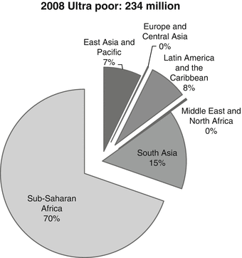
Fig. 6.2
Where those in subjacent and ultra-poverty lived: 2008 (Ahmed et al. 2007, updated 2012)
Figure 6.3 shows the trends in ultra-poverty proportions in three major regions from 1990 to 2008. Again we see that the declines were much more rapid in East Asia and the Pacific than elsewhere. The proportional declines in ultra-poverty from 1990 to 2008 by region were as follows: East Asia and the Pacific from 13.4 to 0.9 %; South Asia from 8.0 to 2.2 %; and Sub-Saharan Africa from 24.5 to 20.0 %.
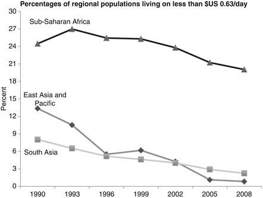
Fig. 6.3
Trends in ultra-poverty proportions of regional populations, 1990–2008 (Ahmed et al. 2007, updated 2012)
The East Asia and the Pacific region experienced substantial economic growth during this period and also had initial conditions such that the growth benefited many people living in poverty (i.e., growth elasticity of poverty reduction was very high). South Asia also achieved remarkable economic growth rates during the period, but was less able to convert this growth to reductions in poverty. Sub-Saharan Africa saw both limited economic growth and poverty reduction during this period. Given population growth throughout this period, Sub-Saharan Africa has seen increases in the number of people living in ultra-poverty even though the proportion of the population living in ultra-poverty has declined. Sub-Saharan Africa’s high proportion of ultra-poverty and limited growth and progress in reducing poverty calls into question the idea that business-as-usual will create improvements in well-being in a timely manner for a large share of the world’s absolute poorest. Indeed the continued prevalence and severity of poverty in Sub-Saharan Africa is one of the major contemporary ethical challenges to the global society.5
Under theoretical standard growth models the convergence hypothesis implies that gains should come quickest to those living in ultra-poverty. Theories of poverty traps link severe poverty with slow improvements in welfare. The severity of poverty and the limited progress in reducing it indicate that the poorest in Sub-Saharan Africa may be trapped in poverty as some recent literature suggests (Azariadis and Stachurski 2005; Sachs 2005; Collier 2007). Micro-level evidence of poverty traps has been found for a number of countries in Sub-Saharan Africa, while little evidence has been found for countries in other regions of the world where the severity of poverty is lower (Russia, China, Mexico).
If poverty traps exist, those in ultra-poverty may be so poor that optimal behavioral choices cause them to rise out of poverty much more slowly than those who are less poor. If this is the case, then gains may come more quickly to those living just under US$1.25/day in subjacent poverty and the people furthest from the extreme poverty line—those in ultra-poverty—will experience less poverty reduction. How can we tell whether those in ultra-poverty have fared better or worse than those closer to the line?
While panel data is needed to decisively answer this question, we calculated the amount that subjacent and ultra-poverty would have been reduced (or increased in some cases) if poverty reduction had come from across-the-board income growth by the same amount to get an indication of this from national poverty data. We compared this ‘equal growth scenario’ poverty reduction with the amount of poverty reduction that actually took place. The ‘equal growth scenario’ poverty reduction is shown as a white bar next to the actual change in poverty proportions in Fig. 6.4 (the appendix describes how this was calculated). For example, if the 21 percentage point decrease in global poverty had come from universal income growing by the same amount, there would have been a decline in subjacent poverty of 16 percentage points and a fall in ultra-poverty of five percentage points.
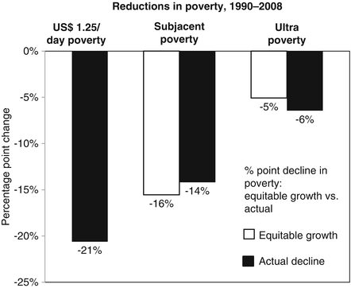
Fig. 6.4
Percentage point changes in poverty from changes in subjacent and ultra-poverty: 1990–2008 (Ahmed et al. 2007, updated 2012)
We found that the incidence of poverty among those just below the US$1.25/day poverty-line fell two percentage points less than it would have had all incomes grown equally, whereas the incidence of ultra-poverty fell one percentage point more than it would have had all incomes grown equally. This finding suggests that poverty reduction was quite equal between the subjacent poor and the ultra-poor—in fact it marginally favored the ultra-poor. It is encouraging to see that the theory of poverty traps may not be holding true for those in ultra-poverty. This is in contrast to the trend that was observed from 1990 to 2004, when ultra-poverty fell much more slowly than subjacent poverty (Ahmed et al. 2007), which was more consistent with theoretical expectations of the existence of poverty traps. Part of the reason for this change is that we are using the 2005 purchasing power parity (PPP) exchange rate rather than the 1993 PPP rate upon which the previous results were based.
6.3 Ranking Countries by Concentration of Poor
The distribution of the people living below US$1.25/day in the developing world shows that poverty concentration by country was quite similar in 1990 and 2008. The global distribution of poor remained highly concentrated, with ten countries accounting for 78 % in 2008 (Fig. 6.5) compared to 85 % in 1990 (Fig. 6.6). However, a distinct pattern in country-wise poverty reduction emerged when we looked into changes in the numbers of poor over time.
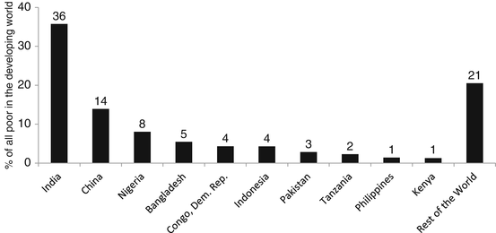
Fig. 6.5
Top ten countries in terms of the percentage of people living below US$1.25/day in 2008 (Ahmed et al. 2007, updated 2012)
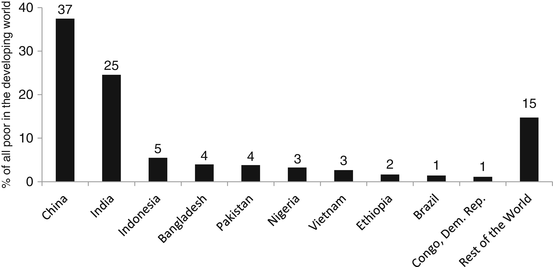
Fig. 6.6
Top ten countries in the number of people living below US$1.25/day in 1990 (Ahmed et al. 2007, updated 2012)
In 2008, 14 % of the global poor lived in China, compared to 37 % in 1990. This high number of poor in China is due in part to sheer population size. China has had remarkable success in extreme poverty reduction—from 680 million in 1990 to only 173 million in 2008.
A comparison of Figs. 6.5 and 6.6 indicates that Brazil, Ethiopia, and Vietnam were among the ten countries with the highest proportions of poor in 1990; but were replaced by Kenya, the Philippines, and Tanzania in 2008. Between 1990 and 2008 there was an upward movement in the distribution of global poor in some Sub-Saharan Africa countries such as Nigeria and the Democratic Republic of Congo. The ranking of countries with the highest numbers of people living in poverty also changed; in 1990 the top three countries were China, India, and Indonesia, but in 2008 they were India, China, and Nigeria.
Further disaggregation of poverty data within countries showed that global extreme poverty was highly concentrated in rural areas of India and China. In 2008 40 % of the total developing world’s poor lived in rural areas of India and China—27 % in rural India and 13 % in rural China. A recent World Bank study (2009) found a widening rural–urban poverty gap in China, particularly for the western provinces where the incidence and severity of poverty is highest. Similarly the divergence in rural–urban poverty rates in India has been an impediment to its overall poverty reduction (Fig. 6.7).
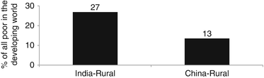
Fig. 6.7
Percentage of the world’s extreme poor (below US$1.25/day) living in rural areas of China and India in 2008 (Ahmed et al. 2007, updated 2012)
Ultra-poverty was also highly concentrated in a few countries. Ten countries accounted for 75 % of the world’s total ultra-poor in 2008. Nigeria alone accounted for 23 % of the world’s ultra-poor. Nigeria’s ultra-poor population (50 million) accounted for almost half of Nigeria’s total poor in 2008. Similarly for the Democratic Republic of Congo, its share of the global ultra-poor was 16 %, which accounts for more than half of the country’s total poor.
On the other hand, although India accounted for 12 % of the world’s total ultra-poor, the absolute number of ultra-poor was around 28 million, which was only 2.4 % of the total population of the country. Similarly for China, the share of ultra-poor was 6 % of global-ultra poor, but the absolute number of ultra-poor (13 million) was only 1 % of China’s total population in 2008. The small fraction of ultra-poor with respect to the total populations of China and India indicates that despite the concerted poverty reduction efforts made by these nations the ultra-poor have been hard to reach. A World Bank (2009) poverty assessment of China notes that it has become harder to eliminate the remaining poverty in the country because the extremely poor are highly dispersed. Addressing this problem would require shifting from area-based poverty reduction approaches to more innovative and streamlined household-based targeting approaches (Fig. 6.8).
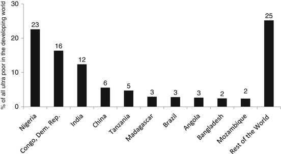
Fig. 6.8
The percentages of the global poor population represented by the top ten countries in terms of the number of ultra-poor living below US$0.63-a-day in 2008 (Ahmed et al. 2007, updated 2012)
6.4 Who Are the Poor?
Understanding the characteristics of the world’s poorest is important for designing effective policies to meet their needs and improve their welfare. In this section we contribute to this understanding by analyzing household data and reviewing the results of empirical research in 20 countries: Burundi, Ethiopia, Ghana, Kenya, Malawi, Mozambique, Rwanda, Senegal, Zambia, Bangladesh, India, Pakistan, Sri Lanka, Laos, East Timor, Vietnam, Tajikistan, Peru, Guatemala, and Nicaragua. The characteristics considered here were limited to those that can be compared across countries, at least to the extent possible.
6.4.1 Spending on Food, Fuel, Housing, and Health Care
Across income groups and regions, expenditures on food represented the highest share of household budgets. In general poorer households and those in rural areas spent a relatively higher proportion of the family budget on food than others, but the differences were not large. Expenditures on fuel represented the second highest expenditure share in Bangladesh, India, and Pakistan, while housing costs represented the second highest share in all three sample countries in Latin America and in Tajikistan. No clear pattern between health care expenditures and poverty emerged across these countries, which is a worrisome finding because poverty assessments for these countries have repeatedly found that ill health is associated with poverty (Ahmed et al. 2009).
6.4.1.1 Remoteness
The poorest and most food-insecure households were located furthest from roads, markets, schools, and health services. In addition to being an indicator of wealth, an electricity connection also indicates, to a certain extent, the ‘connectedness’ of households to roads, markets, and communications infrastructure, and the resulting income-earning opportunities and public services. Consistently across countries, extremely poor households had considerably lower access to electricity than those living above the poverty line (Ahmed et al. 2009).
6.4.1.2 Education
Education has been shown to have significant positive impacts on agricultural productivity, employment, access to credit, use of government services, personal and children’s health, and education outcomes. In nearly all study countries the proportion of uneducated adult males was almost double or more among the ultra-poor than for people living above the poverty line. Quality primary education can provide children from poor families with the tools to move out of poverty. In all study countries, however, the evidence was the same: children from poorer families were less likely to go to school. Without education the future of children living in extreme poverty will likely be a distressing perpetuation of their current experience (Ahmed et al. 2009).
6.4.1.3 Landlessness in Rural Areas
The ownership or control of productive assets is an important indicator of livelihood quality because such assets generate income. In all parts of Asia the landless were highly represented among the poorest. For example, nearly 80 % of the ultra-poor in rural Bangladesh did not own land. In Sub-Saharan Africa, however, little difference was found between the incidence of landlessness among the poorer and less poor households, and in some cases the reverse was true. This corresponds to findings of other studies that in Sub-Saharan Africa the poorest often own some land (but too little), but lack access to other key assets and markets (Ahmed et al. 2009).
6.4.1.4 Excluded Groups
In each of the 20 countries considered in this study some social groups—but not the societal majorities—had consistently higher prevalence of poverty and hunger. Individuals in groups excluded from regional progress against poverty remained among the poorest in Asia. For example, in Laos the prevalence of poverty was more than twice as high among the minority Mon-Khmer than the majority Lao, and in Vietnam the incidence of extreme poverty was more than six times higher among ethnic minorities that among the Kinh and Chinese ethnicities. In India disadvantaged castes and tribes (referred to as Scheduled Castes and Scheduled Tribes) were overrepresented among the ranks of the extremely poor, particularly among those living in ultra-poverty. This was more commonly the case for Scheduled Tribes than for Scheduled Castes (Ahmed et al. 2009).
In Sub-Saharan Africa access to land and other resources depends on membership in groups of common descent, which results in outsiders having difficulty accessing resources and securing stable livelihoods. This is true in Senegal where refugees from Mauritania and displaced people from the Casamance were more likely to remain in poverty than native Senegalese. The genocide in Rwanda also displayed the importance of ethnicity in determining access to resources (Ahmed et al. 2009).
6.4.1.5 Women
Some weak evidence supports the hypothesis that female-headed households are overrepresented among the ultra-poor, but in general, significant differences were not found. Examining only the differences between male-headed and female-headed households obscures the reality that, within households headed by men, the welfare of women and girls may be lower than that of their male counterparts. Some studies in South Asia have shown that within households, women consume significantly less food and sometimes less high-quality food such as meat and eggs (Ahmed et al. 2009).
6.5 Conclusion
We have sought to answer two crucial questions—‘who are the world’s poorest?’ and ‘where are they concentrated?’ We approached these questions by identifying the regions of the world in which deprivation was most severe and noting where progress has been achieved, and also by examining the characteristics of the extremely poor. The overall goal of this research was to strengthen the empirical basis upon which policymakers can make informed policy choices for reducing extreme poverty. The proportion of the developing world’s population in extreme poverty, defined here as those living on less than US$1.25/day, fell from 43.1 % in 1990 (the base year for the MDGs), to 22.4 % in 2008. This suggests that the poverty component of the first MDG had virtually been met at the global-level 7 years before the target date of 2015.
Regional progress, however, was uneven. The decline in global extreme poverty has been largely driven by East Asia and the Pacific, aided by South Asia. Indeed East Asia and the Pacific overachieved the poverty MDG, as extreme poverty in the region fell by 42 percentage points from 56.2 % in 1990 to 14.3 % in 2008. Extreme poverty also fell substantially in South Asia, from 53.8 to 36.0 % over 1990–2008. In Latin America and the Caribbean the decline was from 12.2 to 6.5 %. Although Sub-Saharan Africa experienced some decline in extreme poverty from 1990 to 2008, the decline has been very limited (from 56.5 to 47.5 %).
Disaggregating those living on less than US$1.25/day into two groups allowed us to consider changes in the severity of extreme poverty: Those in subjacent poverty (between US$0.63 and US$1.25/day) and those in ultra-poverty (less than US$0.63/day). Using this disaggregation we have shown that 234 million of the world’s 1.3 billion extremely poor people lived in ultra-poverty in 2008. Most of the world’s ultra-poor lived in Sub-Saharan Africa. Most of Asia’s poor lived in the subjacent category—only a small minority there was ultra-poor.
Our findings suggest that poverty reduction from 1990 to 2008 was quite equal between the subjacent poor and the ultra-poor—in fact it marginally favored the ultra-poor. It is encouraging to see that the theory of enduring poverty traps may not be holding true for those in ultra-poverty. This is in contrast to the trend that was observed from 1990 to 2004, when ultra-poverty fell much more slowly than subjacent poverty, which was more consistent with theoretical expectations regarding the existence of poverty traps.
The distribution of people living below US$1.25/day in the developing world shows that extreme poverty was highly concentrated in a few countries—ten countries accounted for 78 % of global poor in 2008. Ultra-poverty was also highly concentrated—ten countries accounted for 75 % of the world’s total ultra-poor in 2008. In 2008 Nigeria accounted for 23 % of the world’s ultra-poor.
Understanding who the poorest are is crucial for the design of effective interventions to improve their welfare. Without context-specific and timely information, it is difficult to design programs that fit their needs. It is thus important to broaden the collection of and access to accurate data on the world’s poorest.
The evidence presented in this chapter suggests that for interventions to reach those living on less than US$0.63/day effectively, remote households that are traditionally excluded from resources and markets should be targeted, and both the low-levels of education and in the case of Asia, landlessness should be taken into account. Our findings suggest that interventions to protect the poor against health shocks, to address the exclusion of social groups, to prevent child malnutrition, and to enable investments—particularly in education—are essential for helping them rise out of poverty.
Appendix: Subjacent and Ultra-poverty Decomposition Analysis
To calculate the change in extreme poverty that would have resulted from equal growth in all incomes it was assumed that incomes within countries and regions were log-normal distributed (a common assumption in the inequality literature, see Bourguignon 2003 and Klasen and Misselhorn 2006), such that the distribution of income in 1990 was log-normal distributed with a mean, 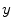 and a standard deviation 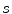. Bourguignon (2003) shows that in this case the poverty rate P
t
can be calculated from only the mean and standard deviation of income by:
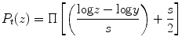
(6.1)
Where z is the poverty line and 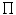 is the cumulative normal distribution. When incomes are log normally distributed the standard deviation can be calculated from the Gini coefficient of income (G) by:
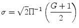
(6.2)
Where 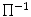 is the inverse of the cumulative normal distribution.
Using Eq. (6.1) it is possible to determine the growth in income commensurate with the observed change in dollar/day headcount poverty between 1990 and 2004 by calculating the estimated level of mean income 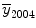 that would give the observed headcount poverty estimate of 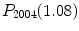 if the standard deviation of the distribution (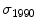) had stayed the same:
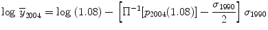
Using this estimate of  , headcount poverty estimates 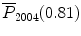 and 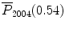 can be determined and from this expected change in subjacent and ultra-poverty can be generated.
, headcount poverty estimates 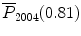 and 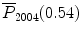 can be determined and from this expected change in subjacent and ultra-poverty can be generated.
, headcount poverty estimates 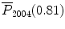 and 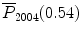 can be determined and from this expected change in subjacent and ultra-poverty can be generated.Country Gini indices were taken from World Bank (2011). For regions the standard deviation of the regional distribution of income was taken directly from Besley and Burgess (2003). Milanovic’s (2002) estimates of the distribution of world income from household survey data were used to estimate the Gini of the developing world.
References
Adato M, Carter M, May J (2006) Exploring poverty traps and social exclusion in South Africa using qualitative and quantitative data. J Dev Stud 42(2):226–247CrossRef
Ahmed AU, Hill RV, Smith LC, Wiesmann DM, Frankenberger T (2007) The world’s most deprived: characteristics and causes of extreme poverty and hunger. 2020 discussion paper 43, International Food Policy Research Institute, Washington, DC
Ahmed AU, Hill RV, Smith L, Frankenberger T (2009) The poorest and hungry: characteristics and causes. In: von Braun J, Hill RV, Pandya-Lorch R (eds) The poorest and hungry: assessments, analyses, and actions. International Food Policy Research Institute, Washington, DC, pp 107–116
Antma, F, McKenzie D (2005) Poverty traps and nonlinear income dynamics with measurement error and individual heterogeneity. World Bank Policy Research working paper 3764, World Bank, Washington, DC
Azariadis C, Stachurski J (2005) Poverty traps. In: Aghion P, Durlauf S (eds) Handbook of economic growth. North-Holland, Elsevier, Amsterdam/San Diego, pp 295–384
Barrett C, Bezuneh M, Aboud A (2001) Income diversification, poverty traps and policy shocks in Cote d’Ivoire and Kenya. Food Policy 26(4):367–384CrossRef
Barrett C, Marenya P, Mcpeak J, Minten B, Murithi F, Oluoch-Kosura W, Place F, Randrianarisoa JC, Rasambainarivo J, Wangila J (2006) Welfare dynamics in rural Kenya and Madagascar. J Dev Stud 42(2):248–277CrossRef
Besley T, Burgess R (2003) Halving global poverty. J Econ Perspect 17(3):3–22CrossRef
Bourguignon F (2003) The growth elasticity of poverty reduction: explaining heterogeneity across countries and time periods. DELTA working paper 2002–03, Department and Laboratory of Applied and Theoretical Economics, Paris
Collier P (2007) The bottom billion: why the poorest countries are failing and what can be done about it. Oxford University Press, Oxford
Jalan J, Ravallion M (2001) Household income dynamics in rural China. Policy Research working paper series no 2706, World Bank, Washington, DC
Klasen S, Misselhorn M (2006) Determinants of growth semi-elasticity of poverty reduction. Mimeo, University of Göttingen, Göttingen
Lokshin M, Ravallion M (2004) Household income dynamics in two transition economies. Stud Nonlinear Dyn Econometr 8(3):374–389
Milanovic B (2002) True world income distribution, 1988 and 1993: first calculations based on household surveys alone. Econ J 122:51–92CrossRef
Sachs J (2005) The end of poverty: economic possibilities for our time. Penguin Press, New York
World Bank (2011) PovcalNet: an online poverty assessment tool. World Bank, Washington, DC. http://iresearch.worldbank.org/PovcalNet/index.htm. Accessed 6 Jun 2012
World Bank (2009) From poor areas to poor people: China’s evolving poverty reduction agenda. An assessment of poverty and inequality in China. Poverty Reduction and Economic Management Department/World Bank, Washington, DC
Footnotes
2
The World Bank defines the extreme poor of the world as those who live on less than US$1.25/day, measured at the 2005 purchasing power parity (PPP) exchange rates. The measures of poverty used in this chapter come from PovcalNet (World Bank 2011). PovcalNet is an interactive computational tool that has been developed by a team at the World Bank Research Group that allows users to calculate poverty measures for different poverty lines and country groupings based on household survey data.
3
The developing world was divided into six regions: East Asia and the Pacific, South Asia, Sub-Saharan Africa, Latin America and the Caribbean, Eastern Europe and Central Asia, and the Middle East and North Africa (in decreasing order of total population). We have removed China from the East Asia and Pacific region to observe China’s performance separately.
4
Although the poverty gap ratio and the distribution-sensitive squared poverty gap ratio could be used to measure the depth and the severity of poverty respectively, we used the head-count measure of poverty because its interpretation is straightforward.
5
Poverty traps have been identified in Madagascar (Barrett et al 2006), Kenya (Barrett et al. 2006), South Africa (Adato et al. 2006), and Cote d’Ivoire (Barrett et al. 2001), but have not been identified in Russia (Loshkin and Ravallion 2004), China (Jalan and Ravallion 2001), and Mexico (Antman and McKenzie 2005), although the authors found considerable persistence of poverty over time in Mexico.